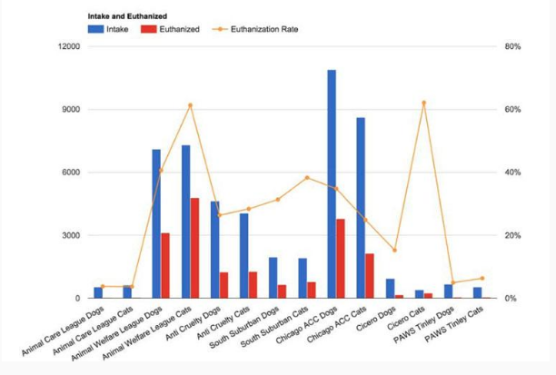
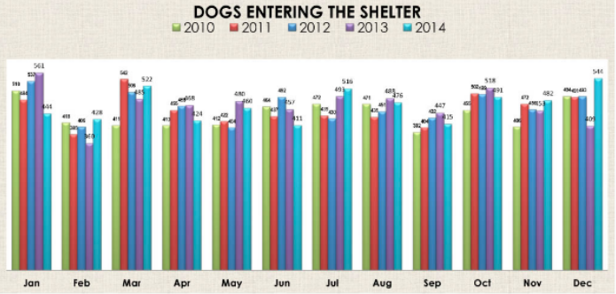

“Dogs are not our whole life, but they make our lives whole.”
Click on the buttons inside the tabbed menu:
An animal shelter is a place where stray animals, usually cats and dogs, are provided with all of the necessities to survive. From shelters, people can adopt and give these innocent animals a home. There are different variations of animal shelters, and in some animals are treated cruelly until they are finally adopted or euthanized.
No-Kill Shelters:
A no-kill shelter is the most humane shelter by far. Animals are provided with care no matter how full the shelter becomes. These animals are not euthanized in order to introduce space for new, younger animals. However, these shelters quickly become overcrowded if animals are not adopted at a steady pace, so there is a limited number of animals that can be accepted.
Non- Profit No-Kill Organizations:
Bobbi and the Strays - (718) 326-6070
Sean Casey Animal Rescue - (718) 436-5163
Kill Shelters:
A kill shelter is a shelter that euthanizes animals in order to prevent overcrowding and create space for new, younger animals that are more likely to be adopted. More than 10% of the animals in these shelters are euthanized.
Each year, approximately 1.5 million shelter animals are euthanized (670,000 dogs and 860,000 cats). However, the number of dogs and cats euthanized in U.S. shelters annually has declined from approximately 2.6 million in 2011, which can be contributed to an increase in adoptions from shelters and the return of lost animals.
Organizations that Euthanize the Animals:
ASPCA: American Society for the Prevention of Cruelty to Animals - 1 (888) 666-2279
ACC: Animal Care Centers of NYC - (212) 788-4000
Benefits of Adopting a Shelter Animal
You give pets a second chance for a better life.
Shelter pets tend to be more loving after they grow to trust you and feel safe.
You save money by not buying them from breeders and private organizations.
You are not funding puppy mills.
Dogs are more likely to be trained.
 